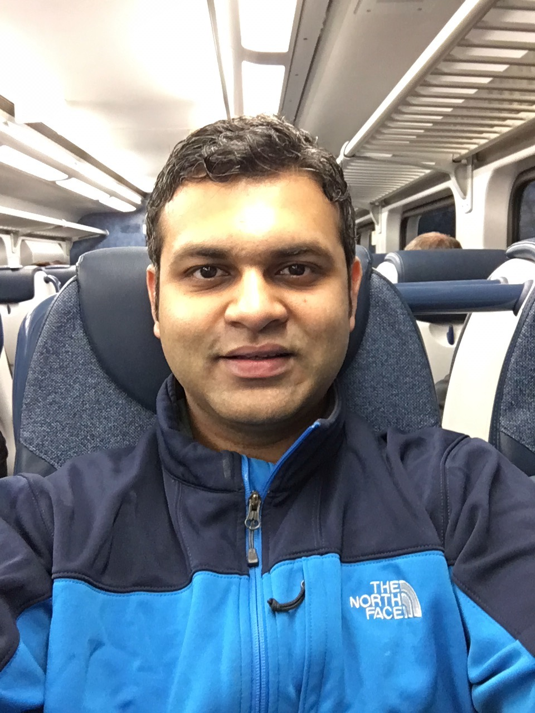

Adarsh Yoga
Software Engineer at Intel Corporation
About
I am a compiler engineer in the Intel
Python team. I work on designing programming abstractions for
expressing GPU parallelism in Python. Before joining Intel, I went
through the
Santosh Nagarakatte Ph.D grind
at Rutgers University. I worked on
program analysis techniques for identifying performance and
correctness issues in parallel programs.
Publications
- On-the-fly Data Race Detection with the Enhanced OpenMP Series-Parallel Graph
Nader Boushehrinejadmoradi, Adarsh Yoga, and Santosh Nagarakatte
International Workshop on OpenMP(IWOMP) 2020 - Paralleism-Centric What-If and Differential Analyses
Adarsh Yoga, and Santosh Nagarakatte
Programming Language Design and Implementation(PLDI) 2019
[pdf] [Source] - A Parallelism Profiler with What-If Analyses for OpenMP Programs
Nader Boushehrinejadmoradi, Adarsh Yoga, and Santosh Nagarakatte
International Conference for High Performance Computing, Networking, Storage, and Analysis(SC) 2018
[pdf] [Source] - A Fast Causal Profiler for Task Parallel Programs
Adarsh Yoga,and Santosh Nagarakatte
The Eurpoean Software Engineering Conference And The Foundations Of Software Engineering(ESEC/FSE) 2017
[pdf] [Source] - Path-Synchronous Performance Monitoring in HPC Interconnection Networks with Source-Code Attribution
Adarsh Yoga,and Milind Chabbi
International Workshop on Performance Modeling, Benchmarking and Simulation of High Performance Computer Systems(PBMS) 2017
[pdf] [Source] - Parallel Data Race Detection for Task Parallel Programs with Locks
Adarsh Yoga, and Santosh Nagarakatte
The Foundations Of Software Engineering(FSE) 2016
[pdf] [Source] - Atomicity Violation Checker for Task Parallel Programs
Adarsh Yoga, and Santosh Nagarakatte
International Symposium on Code Generation and Optimization(CGO) 2016
[pdf] [Source] - MATLAB Parallelization through Scalarization
Chun-Yu Shei, Adarsh Yoga, Madhav Ramesh, and Arun Chauhan
Workshop on Interaction between Compilers and Computer Architectures(INTERACT) 2011
[Article DOI]
Patents
- Path-synchronous Performance Monitoring of Interconnection Networks based on Source Code Attribution
Milind M Chabbi, Michael Schlansker, and Adarsh Yoga
Patent No.: US10887213B2
PhD Dissertation
- Parallelism-Driven Performance Analysis Techniques for Task Parallel Programs
PhD Dissertation, Rutgers University, October 2019
[pdf]
Awards and Honors
- Bronze medal at the Student Research Competition at PLDI 2015
- Best Emerging Research Poster Award at the IEEE 2010 International Conference on Cloud Computing Technology and Science
Professional Activities
- Artifact Evaluation Committee member at PLDI 2016, 2020, and CGO-PPoPP 2017, 2019
- Student Volunteer at PLDI 2015, 2016, and 2018